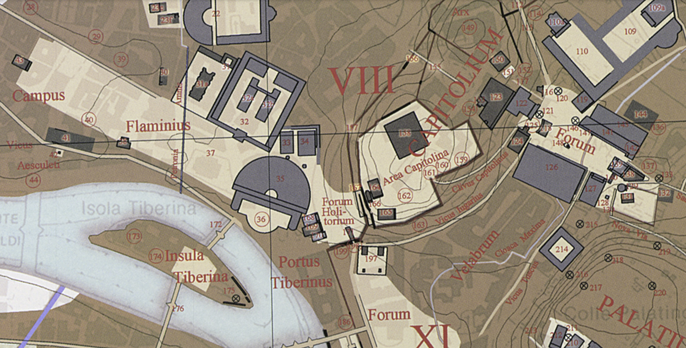
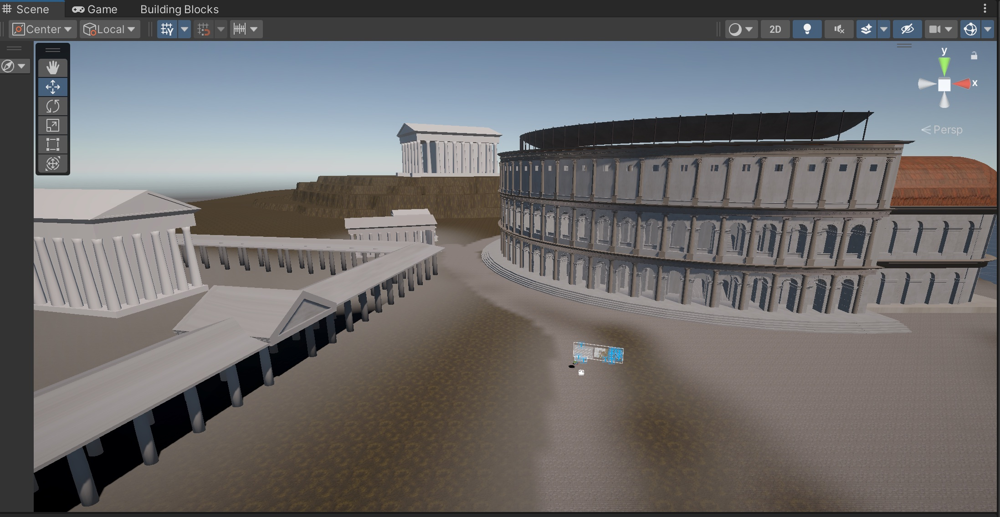
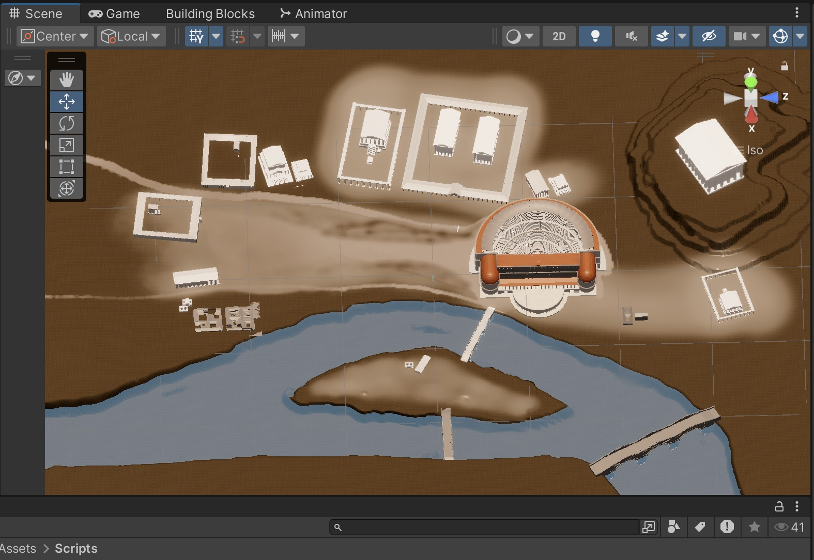
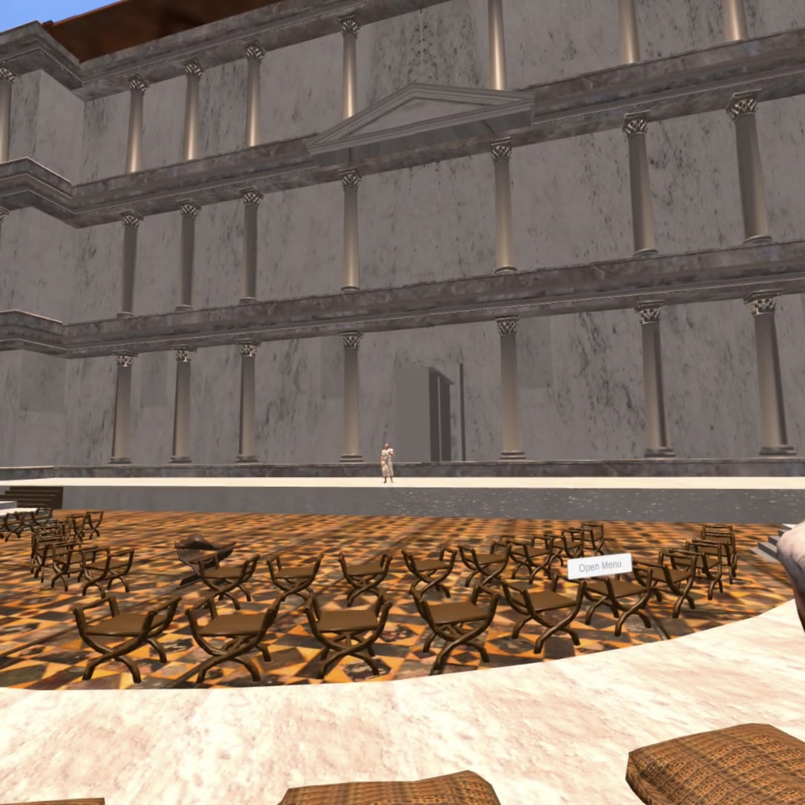
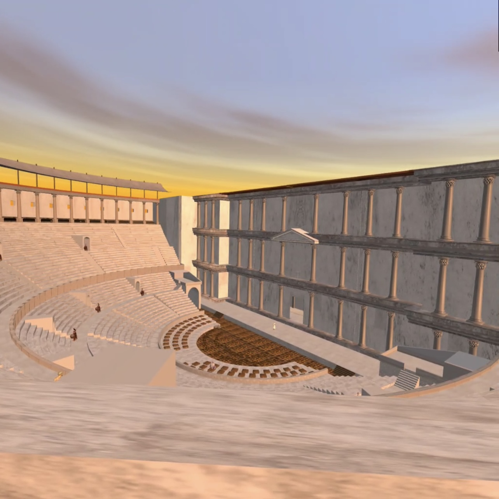

How can immersive media communicate historical interpretation rather than simply visualize historical architecture?
This question became the foundation of my master’s thesis at Duke University.
Rather than creating a virtual reconstruction for its own sake, I explored how immersive environments could communicate Roman architecture, social hierarchy, and public life through experience rather than observation.
The result is a research-driven XR experience that combines archaeological evidence, 3D reconstruction, and interaction design to transform historical interpretation into an immersive experience.
Understanding the Past
The Challenge
The Theater of Marcellus survives today only as fragments embedded within the modern city of Rome. Architectural drawings and archaeological reports document its history, but they rarely communicate what it felt like to experience the theater as a Roman spectator.
My goal was to explore how immersive media could bridge that gap—not by replacing historical research, but by transforming it into an experience that people could actively explore.
Research → Reconstruction
Every design decision began with research rather than modeling.
Before opening Blender, I examined archaeological publications, historical reconstructions, excavation reports, and scholarly interpretations of the Theater of Marcellus to establish the historical foundation for the project.
Because the monument has undergone centuries of transformation, not every architectural element can be reconstructed with certainty. Existing evidence is often incomplete, and scholars continue to debate the appearance of certain structures.
Rather than presenting a single definitive reconstruction, I synthesized archaeological evidence, academic interpretations, and secondary sources to build a model that acknowledges different degrees of historical certainty.


From Evidence to Experience
Rather than immediately placing users into the immersive VR environment, I intentionally designed the experience to begin with an AR exploration.
This introductory stage allows users to examine the reconstruction before entering the virtual theater, while making one important idea explicit: the model is not a perfect recreation of the past, but a research-based interpretation built from archaeological evidence and informed historical judgment.
By revealing different levels of reconstruction certainty through the interface, the experience encourages users to understand digital heritage not as absolute truth, but as an ongoing dialogue between evidence, interpretation, and design.


Designing Spectatorship
Historical Insight
How can architecture shape the experience of being a Roman spectator?
Rather than treating the theater as a container for performances, I approached it as an active medium of historical interpretation.
Drawing on Louis Althusser's concept of interpellation, this project explores how architecture positioned individuals socially and politically before the performance even began. Spectatorship starts long before entering the cavea: movement through the surrounding porticoes, encounters with monuments such as the Temple of Jupiter and the Temple of Apollo, and carefully choreographed routes through the Campus Martius all contributed to experiencing imperial authority.
In this interpretation, architecture is not simply the setting of Roman spectacle—it actively constructs the identity of its spectators.
Reconstructing the Urban Landscape
The reconstruction extends beyond the Theater of Marcellus itself to recreate its surrounding urban environment. Rather than presenting the theater as an isolated monument, the project reconstructs its relationship with nearby architecture, circulation routes, and the broader landscape of the Campus Martius, allowing users to understand how movement and spatial context shaped the experience of Roman spectatorship.



Architecture does not simply contain spectators—it constructs spectatorship.
Design Translation
How can historical interpretation become interaction?
Rather than explaining Roman social hierarchy through text panels, I translated historical interpretation into interaction design.
Users choose different social identities, each with their own circulation routes, seating locations, and viewpoints. Restricted access, controlled movement, and assigned seating encourage users to experience Roman hierarchy through navigation rather than observation.
Instead of reading about social order, users discover it by moving through the theater, allowing architecture itself to communicate status, identity, and imperial authority.


Experiencing Social Hierarchy
Social status influenced not only where spectators sat, but also how they experienced the performance.
By assigning historically informed seating locations, the experience allows users to understand how visibility, proximity, and architectural framing varied across different social groups.



Interactive Walkthrough
What does it feel like to experience the theater as a freedman?
The following walkthrough demonstrates the experience from the perspective of a freedman, one of the lowest-ranking free citizens in Roman society.
Rather than freely exploring the theater, the user follows a historically informed route to assigned seating, experiencing how architecture, movement, and visibility collectively shaped spectatorship in ancient Rome.
Reflection
This project reshaped how I think about digital heritage. Rather than using XR simply to recreate historical environments, I came to see immersive media as a way of communicating historical arguments through architecture, movement, and interaction.
Working across historical research, archaeological reconstruction, 3D reconstruction, Unity development, and user testing taught me how ideas evolve as they move between disciplines. Every design decision required balancing historical evidence with user experience, transforming research into something that could be explored rather than simply explained.
More importantly, this project reinforced my interest in designing interactive experiences that make complex knowledge accessible, engaging, and meaningful. It continues to shape how I approach experience design, cultural heritage, and emerging technologies.